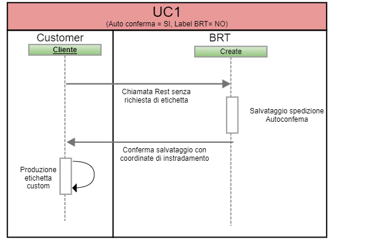
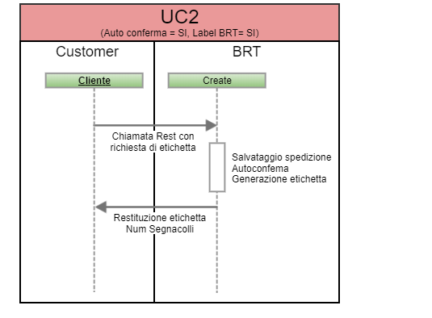
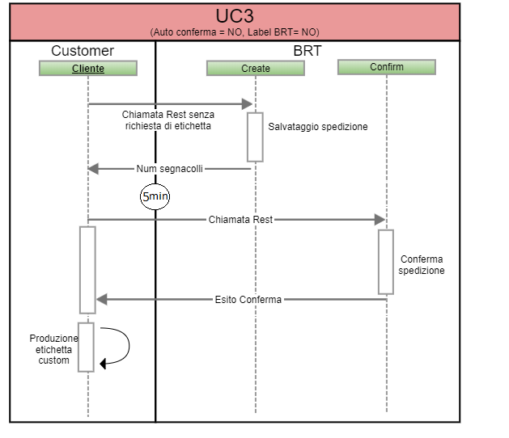
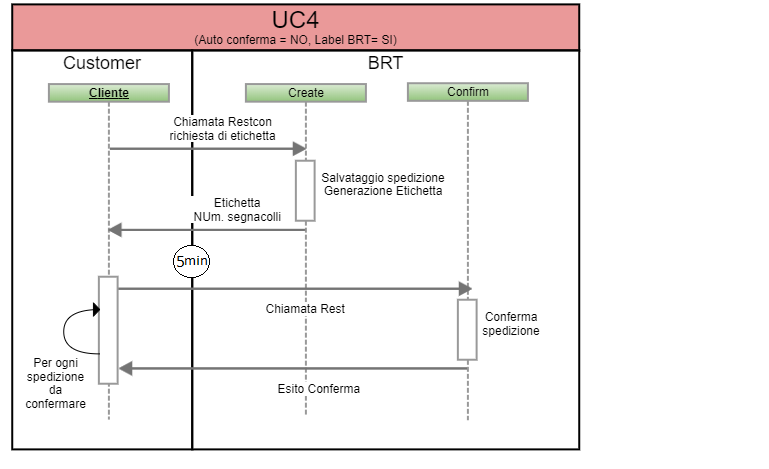

L’utilizzo di Brt Shipment Rest Api è da consigliare a tutti i clienti che vogliono adottare la soluzione DISK B sequenziale e consente di lavorare in due diverse modalità:
La modalità di lavoro AutoConferma o Conferma Esplicita deve essere decisa in fase di analisi preliminare con il cliente, in base alla sua operatività. Tale modalità vale per tutto il traffico del cliente e non può essere variato per singola spedizione.
In ognuna delle precedenti modalità, il cliente avrà la possibilità di ricevere le etichette in formato ZPL o PDF oppure solo le informazioni necessarie per produrre in autonomia la propria etichetta.
Di seguito si riporto una schematizzazione delle possibili chiamate che possono essere eseguite per modalità operativa:
|
Esempio |
Modalità Operativa |
Etichetta Brt |
|---|---|---|
| UC1 | SI - AutoConferma | NO |
| UC2 | SI - AutoConferma | SI |
| UC3 |
NO - Conferma Esplicita |
NO |
| UC4 | NO - Conferma Esplicita | SI |
Il cliente che decide di lavorare in questa modalità per ogni chiamata deve eseguire una invocazione del metodo Create. In caso di risultato positivo la spedizione viene creata ed è immediatamente disponibile alla bollettazione. Tra i valori di ritorno sono presenti tutti i parametri necessari al cliente per produrre in autonomia la propria etichetta.

Il cliente che decide di lavorare in questa modalità per ogni chiamata deve eseguire una invocazione del metodo Create. In caso di risultato positivo la spedizione viene creata ed è immediatamente disponibile alla bollettazione. Tra i valori di ritorno sarà presente lo stream della etichetta (o etichette) nel formato richiesto durante l'invocazione del servizio.

Il cliente che decide di lavorare in questa modalità per ogni chiamata deve eseguire una invocazione del metodo Create specificando il parametro isLabelRequired = 0. In caso di risultato positivo la spedizione viene creata nel sistema BRT ma non è ancora in alcun modo visibile dalla filiale. L'invocazione restituisce tutte le informazioni necessarie per poter produrre l'etichetta personalizzata. Solo quando il cliente è certo delle spedizioni che effettivamente intende affidarci, dovrà eseguire l'invocazione del rest Confirm (tecnicamente devono trascorrere almeno 5 minuti della invocazione del servizio Create).

Il cliente che decide di lavorare in questa modalità per ogni chiamata deve eseguire una invocazione del metodo Create specificando il parametro isLabelRequired = 1. In caso di risultato positivo la spedizione viene creata nel sistema BRT ma non è ancora in alcun modo visibile dalla filiale. L'invocazione restituisce lo stream dell'etichetta del formato indicato. Solo quando il cliente è certo delle spedizioni che effettivamente intende affidare BRT, dovrà eseguire l'invocazione del rest Confirm (tecnicamente devono trascorrere almeno 5 minuti della invocazione del servizio Create).

Questo servizio esegue la cancellazione di una spedizione precedente creata o confermata. Un spedizione risulta cancellabile, indipendetemente dalla modalità operativa AutoConferma/ConfermaEsplicita, fino al momento in cui la spedizione viene presa in gestione dalla filiale BRT. Nel caso in cui si tenti cancellare una spedezione già inn gestione alla filiale, il rest restiuirà un codice di errore.
Servizio che prevede la possibilità di avere il tracking della spedizione partendo dal segnacollo (parcelID) restituito dal servizion di create. Le informazioni di tracking saranno disponibili solo quanto i dati della spedizione sono presi in gestione della filiale.
Brt Shipment Rest Api è stata sviluppata utilizzando tecnologia REST che rappresenta la naturale evoluzione della tecnologia SOAP utilizzata nel precedente ws BRT_V_ShipmentWS. E’ bene precisare che questa nuova soluzione non è in alcun modo legato ai vecchi ws. Brt Shipment Rest Api è stato pensato per semplificare l’integrazione da parte cliente. In particolare:
In generale, le diverse operazioni che potevano essere eseguite con il precedente ws BRT_V_ShipmentWS (FEATURE_CODE) ora saranno disponibili tramite servizi autonomi (per i dettagli si veda a documentazione linkata):
L'utilizzo di questi servizi deve essere concordato con la filiale di riferimento BRT
Tutti i servizi rest documentati NON sono disponibili nelle seguenti fasce orarie per attività di manutenzione ordinaria:
BRT si riserva la facoltà di effettuare verifiche sull'utilizzo di tali servizi e di adottare le necessarie contromisure tecniche restrittive per garantire la costante e corretta erogazione del servizio nel interesse generale di tutti i clienti.